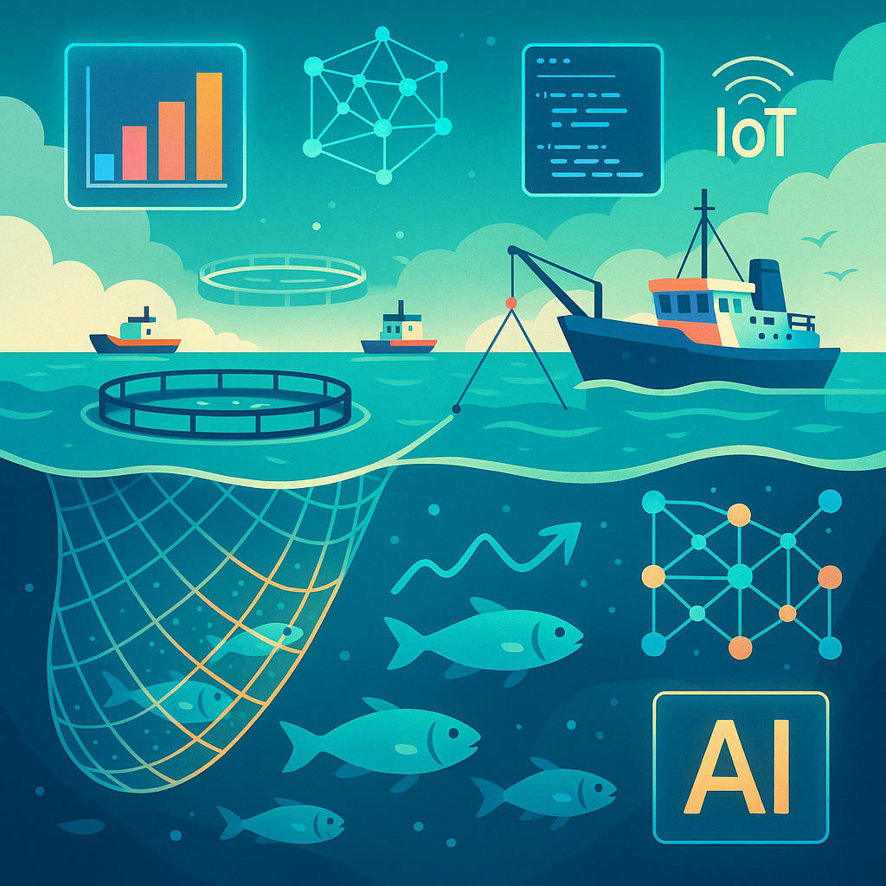
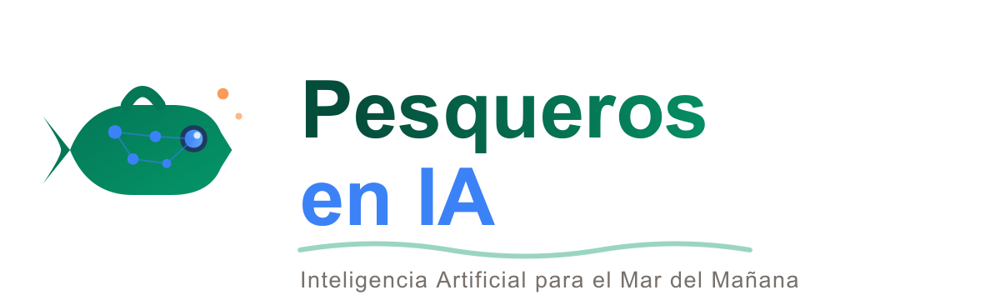
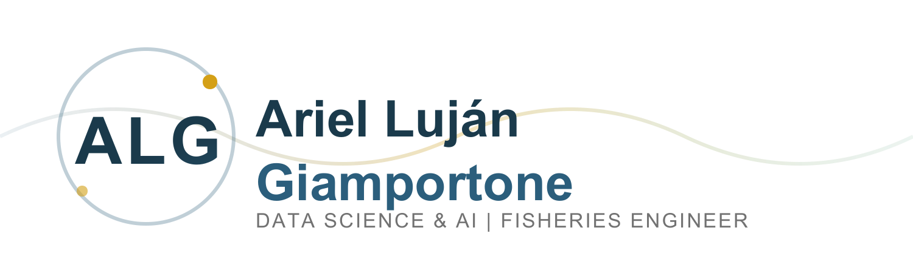

"No se trata de si el sector se va a digitalizar — se trata de si vamos a ser protagonistas o espectadores de esa transformación."
Predecir zonas de pesca con modelos de Machine Learning
Explorar datos oceanográficos y de flota (SST, AIS, clorofila)
Crear dashboards de gestión operativa para flotas y plantas
Usar LLMs para automatizar reportes y análisis técnicos
Evaluar sistemas de visión artificial para clasificación en planta
Optimizar rutas de flota y operaciones con IA
Todo el material es de acceso abierto (GPL-3.0) y ejecutable en la nube sin instalación.